收录于合集

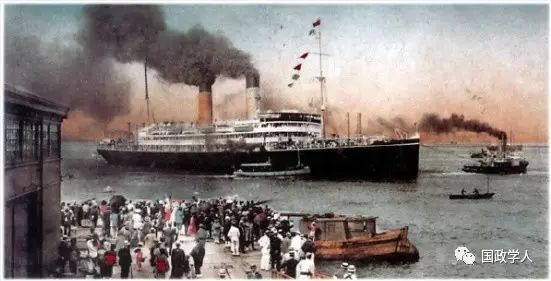
编者按 19世纪的日本亦如晚清中国被西方坚船利炮打开国门，然而日本经历明治维新逐步融入国际体系，最终成为“列强”一员。日本学者菅波秀实对日本在锁国期间以及从放弃锁国政策到第一次世界大战结朿之时的日本对外关系作了深刻讨论，并通过与同时期中国的对比，分析了促使日本能够在西方主导的国际社会中获得有利竞争位置的若干因素。 文章只代表作者观点，与本平台立场无关 ，希望能为广大读者带来启发性思考。
菅波秀实 （Hidemi Suganami），伦敦经济学院博士学位，先后执教于英国基尔大学和阿伯里斯特威斯大学，《欧洲国际关系》、《国际研究评论》、《亚太国际关系》编委，著有《国际关系的英国国学派》、《论战争根源》、《国内类比与世界政治构想》等。
封面图：“黒船来航(Kurofune raikō)”
1853年美国海军准将佩里之抵达日本，也许被公认为是日本与列强发生联系的开端。但是，日本与西方的首次接触，却是始于16世纪中叶葡萄牙海上遭难者之“发现”日本。此后，日本的对外关系经历了三个阶段。
第一阶段，从16世纪中叶一直到17世纪最初几十年，日本与生活在远东地区的外国人保持着广泛联系。第二阶段，到19世纪中叶，徳川家族统治下的日本奉行闭关锁国政策。第三阶段，19世纪中叶以降，日本颇不情愿地放弃了锁国政策，之后又谋求在国际社会中获得平等权利和大国地位 。这里集中讨论日本在锁国期间以及从放弃锁国政策到第一次世界大战结朿之时的日本对外关系。

锁国时期
1603-1868年，是日本历史上著名的江户时期。1868年，江户改名为东京；在这里，武士阶级德川家族结束了封建贵族之间长期的兵戈相见的状态，建立起被称为"幕府"的日本中央政府。幕府的最高统治者是“将军”，在古代，这是天皇的临时军事助手的职衔，但最终成为经天皇正式任命而统治日本的最高封建贵族。在整个江户时期，德川家族的将军职务都是世袭的。天皇家族和宫廷贵族住在古京城京都，但在江户时期最后阶段结束以前，他们在政治上处于大权旁落的境地。
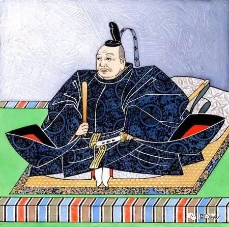
德川家康(1543年-1616年) ****
日本的一部分处在德川家族的直接统治之下，其他地区则被分成由“大名”或封建贵族统治的封建领地。大名分为三种：德川亲族的大名；德川家康夺取大权期间追随其左右的大将后裔；在1600年为其赢得“将军”称号之关原战役后臣服于德川家康统治的大名。德川家族对第三类大名持有怀疑之心。 17世纪初期，主要是为了防止这些大名与外国人结盟而反对德川家族的霸权，或通过对外贸易积聚实力，幕府开始推行锁国政策 。
根据锁国时期的正式禁令，外国人大致分成三类。荷兰和中国被称为“通商国”，或“进行贸易的国家”。朝鲜和琉球属于“通信国”，即这些国家的特使会受到邀请，作为国宾出席江户的各种仪式，以此表达双方之间的友好关系 。世界其他地区则统统受到拒斥。然而，虽然都被称为“通商国”，日本却并非以相同方式对待荷兰与中国；同样，尽管都有“通信国”之号，朝鲜和琉球的地位在日本那里也不能相提并论。
在17世纪初期，有四个欧洲国家与日本发生了联系，即葡萄牙、西班牙、英国及荷兰。头两个国家被德川家族的锁国令驱逐出去，第三个国家因为在日本无利可获而暂时退出 。1673年，在英国人试图恢复贸易之时，适逢幕府的锁国令极为严厉，以致不允许他们重返日本，虽然他们手中握有德川家族最初两任将军早先颁发的特权令。这样，日本所接受的唯一的欧洲国家，就只有荷兰了。
荷兰人被限制在出岛上，这是位于长崎港的一个人工小岛。荷兰人在这里受到一切限制。不过，他们分担了大名的一项负担，而这个事实显示了他们的特权。这就是，他们必须听从将军的训导。除少数例外，大名必须在江户和藩地之间来回改变住所，而将其家人留在江户作为人质。大名来到江户时，必须经引导前往幕府拜见将军。同样，荷兰工厂必须定期派遣特使前往江户，携带礼物晋见将军。工厂主被带到将军面前，以类似大名的方式引见给将军；虽然他也必须向将军屈膝行礼，而这在欧洲人看来也许有失庄重，但他至少在这方面与任何一个重要的大名都处于平起平坐的地位。
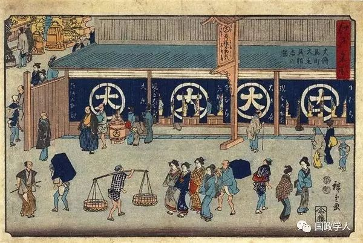
江户时代民情写照
中国人所处的地位完全不同。在江户时期，中国和日本之间并无正式的“通信”关系，即通过官方特使保持相互友好关系 。15世纪早期，为促进贸易发展，日本曾与中国明王朝保持“通信”关系；但到了16世纪中叶，这种交往形式陷入废弃状态。幕府期望借助朝鲜的调停，重建与中国的“通信”关系，但未能如愿。不过，中国商贸仍持续不断地来到日本港口进行私人贸易。1636年，日本宣布长崎是唯一对中国人开放的港口，但中国人并未向江户派遣任何特使，虽然他们的贸易推动了长崎的蓬勃发展。所以，我们发现， 日本人与中国人的关系，是一个更单纯的“通商”典型 。
在江户时期的朝鲜与日本的关系中，有三个主要角色，即朝鲜王室、幕府和对马藩。对马是位于朝鲜和日本之间的一个中转岛屿。幕府邀请朝鲜特使来日，而对马藩则是日朝关系的中介，它不仅与朝鲜进行通商贸易，还在釜山拥有一个规模不大的日本人居住点。日本与朝鲜之间的这种关系，并不是锁国政策的产物。从15世纪开始，两国之间就有这样的关系。饶有趣味的是，幕府乃是基于正式的外交平等原则处理对朝关系的，并且其礼仪细则是由幕府的官方儒家学者一手制定的。
整个江户时期，朝鲜总共有12个使团来日，每个使团都由很多代表组成。例如，1607年派出的首个使团，有467名成员，包括马戏班子和乐队。(当时朝鲜派出的最接近这个规模的特别使团，是为了参加一些重要活动，如国葬，或增进友好的文化使团。然而，有一个重要方面值得注意，即幕府邀请朝鲜使团来日，主要是出于政治目的。幕府试图借助国际承认，提高其声誉，增强其合法性，而这个目的，可以通过朝鲜特使不时访问将军所在的京城而予以实现。
与对朝关系相比，日本与琉球群岛的关系并非根据平等原则，因为琉球国王曾在1609年臣服于萨摩藩——日本最南端的一个藩地。琉球与中国保持着一种朝贡关系，因而促进了贸易；萨摩藩根本不能对这个群岛王国正式称臣于另一国持有异议，反而积极地鼓励这种关系，因为萨摩藩征服该群岛的主要目的，就是与中国建立一种间接的贸易联系。萨摩藩至下令琉球当局向中国隐瞒其与日本的关系，因为泄露琉球国王同时效忠两个主子，会惹怒中国人，进而导致贸易丧失殆尽。1644年，琉球国王开始向江户派遣庆贺使团，由此双双提高了幕府和萨摩藩的声誉。1871年，日本明治政府宣布对琉球群岛拥有充分主权，最初将其纳入曾经隶属萨摩藩的鹿儿岛县，不久之后又给予其冲绳县之地位。明治政府持有一种国家绝对领土管辖权的现代观念，但不同的是封建的德川幕府却容得下与一个不管怎么说都是遥不可及的藩地的藩地保持一种不那么排他性的关系。
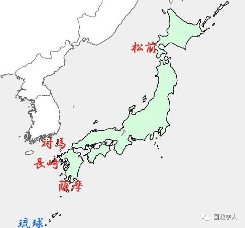
除了与上述四个国家保持接兰以外，日本最北端的松前藩还与阿伊努人发生了一些贸易关系。阿伊努人不仅本身之间互通有无，而旦还从北方的千岛群岛和堪察加半岛带来动物毛皮。然而所有这些贸易关系都是例外。在严厉的锁国政策的限制下，所有其他国家都被拒绝与日本进行任何接触兰。自然，锁国政策的有效性，不仅取决于幕府实施其法律的权力而且取决于外部国家接受这项政策的意愿、对幕府的锁国政策而言不幸的局面开始出现：从18世纪初期开始，越来越多的俄国、英国和美国船只开始停靠日本海岸、在很大程度上，对于这些令人讨厌的外国人相继抵达的官方处理方式，反映了幕府为实施其锁国政策而颁布的各项法律。
第一项法律是1791年法令。该法令巩固了那些用来处理不断抵达日本的外国船只的通用规则、鉴于拒绝外国人前来日本的总原则，1791年法令的口气相对温和，虽然它极其严格地限制那些已经抵达日本的外国人的行动自由。
两名俄国特使——拉克斯曼写在1792年和赖萨诺夫写在1804年——所表现出来的遵守日本法律的意愿，对幕府产生了影响。这导致幕府在1806年改变态度，采取了对俄国人的有利做法、新法令建议，要格外温和地对待俄国人，尽管这只不过是一项要求日本官员尽可能友好地告诉俄国人驶离日本且永不返回的训示。
但是，幕府对俄国人的特殊照顾，很快就因为1806-1807年的科沃斯托夫及达维多夫事件而遭到抛弃。这两人均隶属俄国美洲公司，其中，赖布诺夫是一个主要人物。当时，他们袭击了萨哈林岛和南千岛群岛上的日本人定居点，而这次行动是赖萨诺夫在盛怒之下擅自下令实施的，因为他历经千辛万苦打开日本贸易的努力已告完全失败。幕府就此下令，所有俄国船只一律驱逐出境如果拒不服从，就扣留所有船员；如遇他们抵抗，一律格杀勿论。
另一个不幸事件，发生在1824年。其时，几艘英国捕鲸船袭击了萨摩藩的官员，试图偷取一些犍牛以解饥馑之需。这也许算不上是一件重大的政治事件，但它实际上导致幕府于1825年颁布了所有锁国令中的最不妥协的项法令所有靠近日本海岸的外国船只，一律无条件地驱逐离境。然而，幕府几乎未采取任何措施去加强其海岸防御，因此，这项法令的执行力度也就毫无效果可言。
与此同时，欧洲海军建设和军事实力获得长足发展。 早在1840年，鸦片战争的消息就已通过荷兰工厂传到日本，因此动摇了幕府把中国当作一个大国的信心，更不必说对于其自身执行1825年法令之实力的信心了 。此外，幕府的官方儒家学者认为，无条件驱逐的概念不仅是非理性的，而且与对待外国的道义责任是背道而驰的。日本通过荷兰工厂接到一份报告说，根据1825年法令而曾在1837年遭到驱逐的“莫里森”号，当时除了怀有一些目的以外，其本意却是为了送还日本漂流民，因而触发了一些幕府官员的一种强烈的羞耻感。结果，在1842年宣布废弃无条件驱逐令，转而恢复1806年法令，据此，可以对遇难的船只提供帮助，但登陆上岸却是万万不可的。
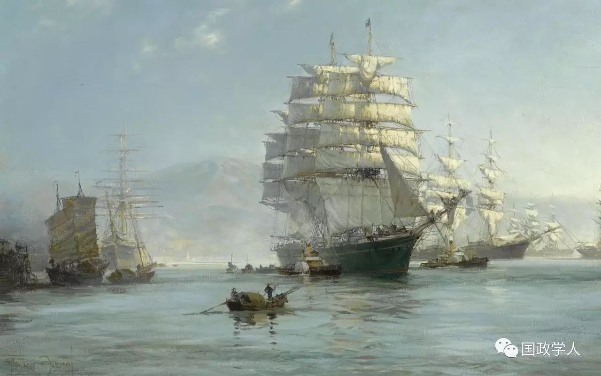
19世纪初的英国皇家海军军舰
幕府法律总体上暗含了不必要的暴力。不过，一定程度上的暴力，对于锁国政策的执行却是十分必要的。这个事实，加上曾被日本囚禁或扣留的漂流民的失之确凿的一些报告，以及无条件驱逐期间发生的不幸事故，导致西方人，尤其是作为最经常性牺牲品的美国人，认为日本人对待外国人的做法是野蛮粗暴的。这也解释了佩里准将对于日本的毫不妥协的态度，以及他所持有的必须把文明强加给日本的看法。佩里坚决拒绝幕府强加给那些来到日本的外国人的通常限制，并抵制幕府官员所有那些试图横加阻挠和故意拖延的一贯伎俩。佩里的办法产生了效果，因为在其显示的优势武力的威慑下，幕府得出结论认为，它并不能采取什么措施去避免接受他的一些要求，至少是暂时地接受。幕府并未打算通过武力去抵制佩里，因为它认为，在打败场战役之后再去接受美国人的条款，将会愈发地丧尽颜币面。

加入国际社会
正如上文所析， 在锁国时期，日本操控着一个可称为种族中心主义的体系，它自己是这个体系的中心，周围是朝鲜、琉球，中国及荷兰。此外，它还与俄国、英国和美国有过零星的接触。这样的联系，并未形成一个见之于西方的那种“国际社会”。但是，到19世纪末，日本已将其与西方的不稳定的关系，转变成一种全面的“社会”关系，其传统的种族中心主义体系失去了实际意义 。问题在于，日本在何时完成了这种转变？
应当指出，在1853-1858年期间，即幕府末期或幕末时期，日本与西方列强通过谈判缔结了一系列条约，外国向日本派来了领事。所以，在这个时期，日本可以说已经参与了国际社会的一些基本规则和习惯的运作。不过，关于这些规则和习惯或机制，日本人的知识尚属有限。他们并不理解维持这些机制的价值，或真正成为拥有这些机制的国际社会的成员的价值。日本的强大仇外集团仍坚持认为，幕府应当奉行锁国政策，幕府在1854-1858年条约中给予西方列强的让步只是权宜之计，一旦日本重建起堪与西方匹敌的实力，它就会恢复古代的锁国禁令。对西方列强来说，正如上述条约款项所明确载定的，它们并未把日本看作是其国际社会的平等一员。所以，尽管它逐渐放弃锁国政策，但人们有理由怀疑，幕末时期的日本还不能说已经成为国际社会的一个正式成员。
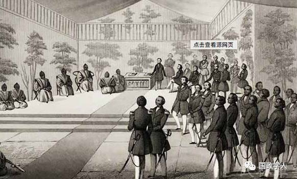
1854年3月31日（嘉永7年3月3日 ）江戸幕府与美国缔结 神奈川条约 ，日本通称为《日米和亲条约》
与此同时，德川家族继续显露出无力恢复锁国政策的迹象。日本的反德川势力，利用幕府的这个弱点并将其发挥到极致。德川家族如今被说成没有资格统治日本，因为他们不能坚守其祖宗之法，而且也未能保护日本免受“洋夷”的人侵。德川幕府就此垮台，1868年，政治权力归复天皇；反德川各派组成联盟，团结在“尊王攘夷”（尊奉天皇，驱逐洋夷）的口号下，因而压倒了德川家族。他们争辩说，只有在天皇的统一领导下，日本才能重建实力，逐走所有西方列强。虽然反德川势力中的主要集团要到1864年才认识到驱逐西方列强的图谋实属徒劳无益，但他们仍抱守着这句口号的后一半，因为它让德川幕府的弱点暴露无遗。
但是，锁国政策并不是新生的明治天皇政府的现实选择。日本人期望新政府将采取一项新的锁国政策，但恰恰相反，它却宣布，举国上下的目标将是复兴日本在世界所有国家之林的伟大地位，幕府与西方订立的条约的不平等部分将予以修改，但日本对外关系将根据国际法而予以处理。
可以说，在这时和世纪之交的某个时候，日本加入了国际社会；到19世纪末20世纪初，它最终成功地说服西方应当修改那些强加给幕府日本的“不平等”条约。1868年，日本宣布放弃锁国政策，准备遵守西方的对外交往规则和惯例，从而表明了成为国际社会一员的意向。大约30年之后，西方列强终于同意修订“不平等”条约，从而使日本摆脱了一个下等国家的地位 。
日本在国际社会中的崛起
从佩里来日到20世纪最初几十年，日本对外关系的发展，可以分为三个阶段。
在第一个阶段，从1853年佩里初次来访到1871-1873年岩仓具视出使西洋，日本仍在不断学习，以理解西方国家对外关系的理论和方法 。在这个阶段开始之际，日本的态度就像一个很不情愿的小学生，但是现实需要很快就让它变成西方外交的一名如饥似渴的学生。1868年明治维新之后，这个进程已变得不可逆转。到这个阶段结束时，日本已在认真地努力适应西方主导的国际社会的得体的行为方式，以便得到承认而成为它的一个正式成员。
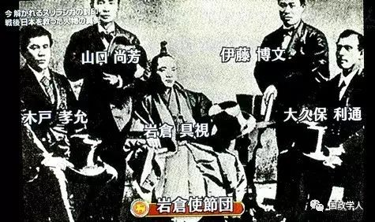
岩仓考察团的核心成员，包括岩仓具视、木户孝允、伊藤博文和大久保利通等人
在佩里来日后的第二个阶段，日本对外关系统领一切的主题，是追求平等地位，而其源头，正是明治政府正式宣布放弃锁国政策 。这个阶段从1871-1873年岩仓使团到1911年。1899年，日本已经废除了领事裁判权，而早在1894年，日本就与西方达成了终止该特权的条约；1911年，日本终于取消了对其关税独立的种种限制。
日本在这两个阶段的转变，提出了改革其对朝鲜和中国关系的必要性。日本与中国之间并无任何正式的外交关系，其与朝鲜的“通信”关系也在19世纪之初宣告终结。明治政府采取的第一轮外交行动之一，乃是试图按照欧洲模式与两个国家建立全面正式的关系 。
必须指出，明治日本与这两国的关系，无论在形式上还是内容上，都非常类似于德川幕府与西方列强之间的关系在形式上，这种关系是基于条约义务在内容上，它是权力政治的一次演习。正如日本处于其接受与西方之“不平等”条约之末期那样，它本身也在1876年将“不平等”条约强加给朝鲜，从而结束了该国的锁国状态；1896年，它又在对华关系上取得了最惠国地位。所以，日本对外关系的第二阶段，就是它在对外关系上运用其从西方学到的东西。显而易见，日本成功地将其所学付诸实践，并成为其在国际社会中崛起的一个主要源泉。
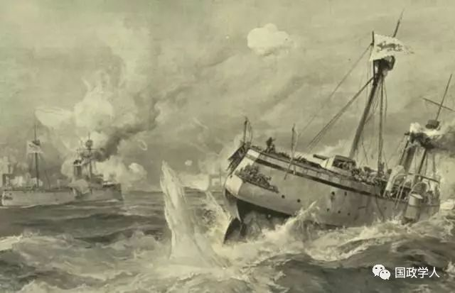
甲午战 争（1894年7月25日—1895年4月17日），日本战胜清政府时期的中国， 大大加深了 中国社会 半殖民地 化的程度，日本国力则更为强大，得以跻身 列强
就日本在国际社会中的地位而言，这个阶段的最为重大的事件，包括1894-1895年中日甲午战争，1900-1901年与欧洲列强和美国为伍参加八国联军侵华战争，1902年英日同盟，1904-1905年日俄战争，以及1910年吞并朝鲜。在中日甲午战争、八国联军侵华战争以及日俄战争期间，日本小心谨慎地遵守国际法的做法，也成为一个重要推动因素，使得西方列强将其当作一个文明国家，而英日同盟的缔结，不仅使其赢得了国际声誉，而且还成为它在后来参加反对德国的第一次世界大战的借口。显然， 到第一个阶段结束之时，日本在行为上已经开始像一个大国了，而且也将被西方列强所接受，成为国际社会之统治董事会的一个成员 。
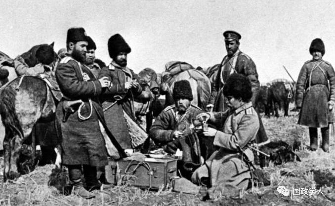
日俄战争（ 1904年2月8日—1905年9月5日 ），正在崛起的日本战胜了沙俄帝国，其地位得以进一步提升
在佩里之后的日本对外关系的第三个阶段，大约始于20世纪第二个十年，它开始巩固其作为国际社会之亚洲大国的地位，并且力图获得与西方大国的同等重要的平等权利 。日本通过在第一次世界大战之后成为国际联盟行政院的一名常任理事国而确保了这样的地位，而它在战争期间提出的对华《二十一条要求》，明显地暴露出日本已经确立了帝国主义道路，在其后的几十年里，日本在这条道路上越走越远。

日本对外关系的西方化
在这里，我们有必要考察日本人是如何接受那些在锁国期间对他们来说完全是格格不入的西方对外关系习惯做法的。西方人在幕末时期来到日本之时，西方来访者与日本统治阶级之间在对外关系目标方面存有根本分歧：日本人对此预期不大，因为与锁国传统相伴随的，不仅是一种含糊不清的仇外情绪的培育，而且还有一种自给自足观念的存在。除了毫无影响的少数人以外，人们普遍认为，外国人运来的都是不必要的奢饰品，而他们带走的却是日本几乎不能剩余的物产，所以，对外贸易对日本经济与社会来说贻患无穷。这种观念，因为武士道精神而愈发强烈；武士道精神不仅强调勤俭节约，而且轻视商业贸易。
因此，幕末时期颇不情愿地放弃锁国政策，而明治时期迅速摆脱闭关状态，都推动日本接受西方的对外关系目标，而后者反映了西方当时的国际经济理论和实践。在这个意义上，锁国政策的放弃，这件事本身就可以说是走上了西方化道路。
日本对外关系目标的西方化，是与西方列强将其对外关系的正式手段或机制强加给日本而相伴相随的 。这个进程始于佩里抵达日本，他成功地拒不接受日本对待不受欢迎的外国人的传统方式。在西方人引人的新方式或机制中，最为根本的是外交/领事制度和国际法。
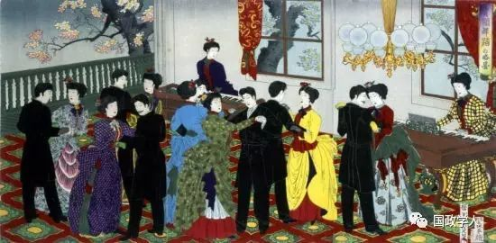
明治维新使日本迅速崛起，通过学习西方，走上近代化道路
向国外传递信件和派遣特使的概念，在锁国以前的日本早已有之，而接受国外使团的做法，则一直持续到江户时期。但是，欧洲的永久性常驻外交使团或领事的概念完全不同，因而对日本人来说完全是陌生的。佩里提议在日本建立一个美国领事馆，遭到日本的强烈反对，因为在幕府看来，作为一种外国民事管理机构，领事馆完全不符合日本主权。
然而，佩里同样地绝不后退。最后的解决办法，看上去似乎是一个有意的误译：1854年美日条约的英语文本确保美国政府在条约从签字之日起期满18个月后自动有权派遣“领事或代表常驻下田”，而日本语文本则指出，两国之间的这个协议在18个月之后的生效，乃是有条件的。
条约中没有任何一项条款表明，在荷兰语、英语、汉语、日本语四个版本中，哪一个才是条约原本。通过这样的一项条约，佩里达到了目的，而日本似乎通过谈判掩盖住了他们的弱点。
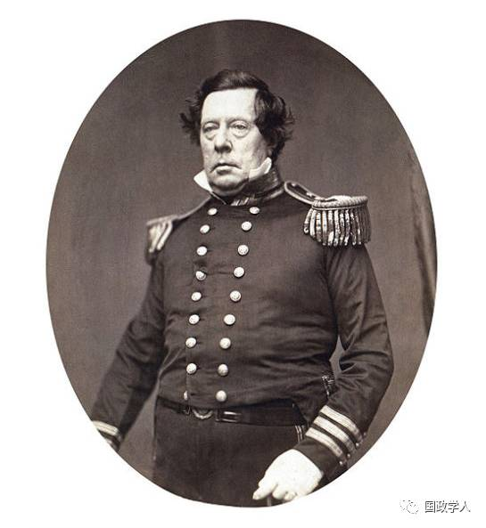 马休·佩里（Matthew·C·Perry，1794年－1858年），美国海军将领
根据英文版条款，1856年，哈里斯作为美国总领事抵达下田。幕府官员强烈抗议他的到来，并严格限制其行动自由，但最终还是承认了他的存在。到1858年，日本已与西方签订了商业条约，西方列强不仅获得了在日本派设常驻外交和领事代表的权利，而且取得了对其国民的治外法权。这些成就，大都归功于哈里斯的谈判技巧，同时，幕府内部的反锁国集团势力的增强，也发挥了决定性作用。但是，日本自身却未向国外派遣常驻使团，直到明治时期，那时，锁国政策最终被毫无保留地彻底废除。
鉴于其当初坚持常驻外交或领事代表不符合日本主权的历史，因而令人好奇的是，幕府为何又仅仅基于非双边原则而给予外国人以治外法权。我们在这里可以指出三个原因。第一，日本谈判人员并不拥有避免这项条约的充分权力。第二，他们在进行谈判时，仍然在锁国思想的框架内转圈，这就意味着，除了1855年俄日友好条约这个显著的例外，所有条约都有外国人派来日本常驻的预期，但却从未设想向外国派遣日本人。这种利益平衡的单边性，似乎加强了实力平衡的单边性。第三，日本谈判人员根本不了解国际关系的运行情况，以致他们无法预见这项条约所带来的麻烦之处和不公正性。就此而言，必须指出的是，日本人的无知，部分解释了他们何以毫不迟疑地给予佩里最惠国待遇条款，并且又在与哈里斯的谈判中接受了固定税率的要求。
与常驻外交/领事代表一事相比，日本更加平稳地接受了国际法，尽管他们事实上同样对国际法一无所知。这是因为，多少懂得一点国际法，对于幕府应对西方在佩里抵达之后所运用的新概念和新规则来说，是十分重要的。此外，明治政府建立之时，人们普遍期望它会逐走外国人，因为反德川势力利用沙文主义口号向幕府施加压力。但是，在恢复锁国政策方面，新政府既无权力也无意向，因此，它在执掌大权之后，即刻觉得有必要为其对外政策正名。在这方面，国际法概念可谓再合适不过，因为明治政府可能通过下面这个观点来安抚民众，即西方列强遵守国际法，因此不应将其看作是无法无天的野蛮人。绝大多数传人日本的国际法教材都具有自然法色彩的事实，非常适合明治政府的想法，因为西方自然法的语言是借助儒家的基本词汇而翻译成日本语的，从而给新的规则载体增添了一种洋洋自得的气势。
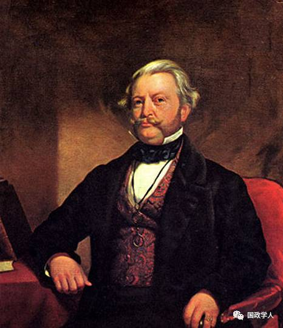
汤森德·哈里斯(Townsend Harris,1804年-1878年)
这里还应当指出， 明治政府对国际法的利用，不仅是为了保卫日本而反对西方对其内政的干涉，而且还是为了打破中国对朝鲜的宗主权 。日本人将通过武力手段实现这个目标，但他们也企图利用国际法所含有的西方国际关系理论的基本思想工具，如主权平等、独立和不干涉，借此反对中国的宗主权概念。与此同时，日本还试图通过遵守国际法，给西方列强留下一个好印象。在中日本甲午战争期间，日本政府分别向陆军和海军本部派遣了两名著名法学家，充当两军的法律顾问。在日俄战争期间，更多法律顾问参加了战争，一些甚至身处作战前线。日本精英阶层中的一个趋势是，他们都把尊重国际法作为其西方崇拜的一个组成部分。

日本的有利因素
几个因素有利于日本在西方主导的国际社会中的抗争。如将日本与中国进行一番比较，可能格外富有启示性。
首先，我们可以比较一下两国的自我印象。 中国把世界分成文明中心和野蛮边缘 。在中心，皇帝的统治十分有效；在边缘，中国人则认为，中国的影响并非在于促进其道德升华和生活进步。重要的是，这种区分是文化上的，而不是领土的或种族的 。
日本人也有一种民族优越感。尤其是，日本的饱读诗书的学者自觉抵制中国文化，而这些人到19世纪之时还大有影响。他们争辩说，日本因为神道教信仰而独一无二且高人一等日本天皇是天照大神之后，日本列岛和日本民族也源于神性，因此，日本要比世界其他民族优越。因此， 与中国人相比，日本人的优越感是与民族的统一性和领土的完整性密切相连的，正是在这种优越感之下，日本民族形成了独特的文化 。
两个民族之间的这个差异有利于日本而不是中国，因为，日本政府比中国政府更在意其领土和种族，能够更加敏锐地看待来自外部的威胁 。“黑船”促成了日本领导人中间的一种强烈的危机感，而中国人不过是将其看作是另一场麻烦的根源。
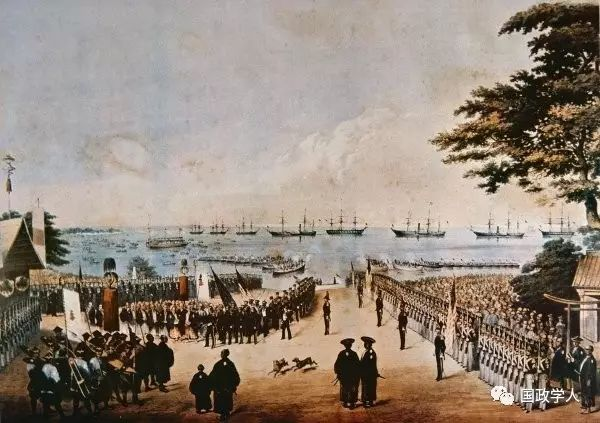
马修·佩里的黑船让日本见识到了西方文明的船坚炮利
第二个对日本而不是中国有利的因素，是两国领导阶层的性质不同 。日本的统治阶级是武士阶层。虽然200年的国内和平使得武士阶级作为军人的原本作用显得多余，并使其实际上沦为管理官员，但他们保持了作为军事学家的传统思维模式。这有助于日本领导人在面临西方威胁之时排除了非理性的战略选择，进而促使他们引进优越的西方技术。相比之下，中国文官对军事事务和技术器物毫无兴趣，甚至是鄙视这些器物。
与幕府领导人相比，萨摩热和长州藩两地的排外集团受到其沙文主义的更大误导；但是，经过1863年和1863年事件，经过与西方海军力量的较量，他们也终于认识到直接面对西方新技术的歌要意义，因此，加快了借助外部援助来实现军队现代化的步伐。在这方面，我们还可以指出说，与中国的情况不同，日本的农民起义并未演变成大规模的仇外运动，果真如此，将不仅会招致西方列强对日本的军事干涉，而且还会造成对其政治独立的进一步限制。
第三个因素，是日本准备向外国学习 。日本的民族优越感并未强烈到将这个选项排除在外的程度。事实上，即使在锁国时期，在所谓的兰学家中间形成了强烈的西方崇拜现象，尤其在18世纪中叶以后。尽管人数不多，但他们还是表现出日本准备寻求任何新的知识形式，无论其有着怎样的文化或种族根源。经过学者的努力，在1853年佩里抵达日本这一年，产生了看得见的成果：上述两个藩地的其中一个，竟然制造出现代火炮。不过，在江户时期，技术和军事科学的西方化，仍显得微不足道。明治时期，日本政府和人民开始作出系统化的努力，从西方引进一切必要的人工产品及所有相关器物，从而完全成为一个文明而现代的国家。
第四个因素，是日本独一无二的双元权威结构：在天皇之外，还有一个将军制度 。正如上文所析，日本的开国，是与幕府的权力和威望的衰落步调一致的，但对日本来说颇为幸运的是，天皇成为反徳川集团的一个团结中心，并且使日本能够避免长期的国内分裂局面。此外，统治阶层的及时变化，也为日本提供了一个根据西方路线实施政治体制改革的机会。相比之下，中国却没有这样一个可能推动这种转变的第二权威。 中国在面临西方侵略现实下的复兴需要实现其政治体制的现代化以及引进西方技术的观念，完全败于统治阶层的保守思想观念以及陈旧制度的无动于衷 。
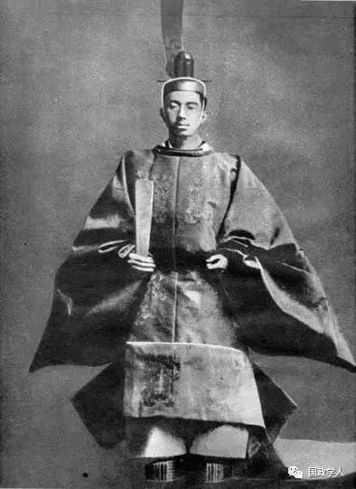
明治天皇
技术和制度层而的西方化，使得19世纪的日本完全不同于中国。制度上的西方化有助于日本获得与西方列强平起平坐的地位，因为“不平等”条约的修改，已经促使其按照西方模式去改革其国内法律。此外，封建制度的废除和明治政府中央集权化的土地税制的实施，使得日本山此奠定了国家所主导的工业化的基础。
19世纪下半叶日本制度的西方化的真实情况，本文将不做讨论。但是，必须指出的是，在道德层面，传统的儒家价值观念，通过国家控制的教育而得到强调；在更深的社会心理层面，日本人的人际关系观念似乎大致保存完好，尽管明治时期流行着一股西方崇拜之风。
第五，必须指出各种地理因素及其含义。 日本要比中国小得多，而且从欧洲角度看，它位于中国次大陆以外。这就使得中国成为欧洲资本主义的最有吸引力的中心，并成为远东地区的头一个牺牲品。由此产生的时间差，对于日本来说弥足珍贵 。它让幕末时期的一些思想开化的日本领导人，在通过荷兰工厂得知邻国发生的事态之后，试图作出最大努力，避免重蹈中国的覆辙。
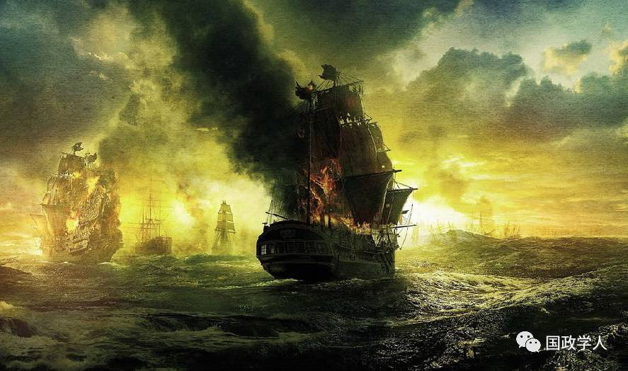
1840年的鸦片战争，清政府战败，中国开始沦为半殖民地半封建社会
再者， 日本想方设法在世界之遥远一隅小心谨慎地推行锁国政策之时，适逢为首的几大欧洲列强的扩张势头开始放慢 。英国和法国已从中国攫取了足够多的好处，正如其相继卷入太平天国起义和第二次鸦片战争所表明。此外，英国、法国和俄国卷入了克里米亚战争。欧洲扩张势头的减速，使得美国成为打开日本国门的第一人。对日本来说幸运的是，美国总统的更迭，从共和党的菲尔莫尔到民主党的皮尔斯，减少了美国远东政策的军事色彩。美国在日本所寻求的，主要是港口设施、至关重要的对华贸易及其在北太平洋的捕鲸业，而不是获得殖民领土。
此外， 在新政府开始执掌大权之时，日本由于幅员不大，得以有效地将其统治扩展到全国范围，从而维持一个中央集权化的制度，而这对于中国来说却要困难得多，部分因为其规模是如此巨大 。
在上述这个名单上，还可以添上其他许多因素，例如，日本的经济发展水平、幕末时期和明治初期的识字率，等等。然而，上述分析试图表明， 日本在国际社会中的崛起，部分取决于一系列幸运的环境因素，部分归功于日本有意识地增强自身实力并努力对外部压力作出理性反应。它在对外事务上急于满足西方文明标准的做法，同样至关重要。它符合这些标准的证据，不仅包括接受国际法和外交制度，而且还有对华和对俄战争的相继取胜 。马丁·怀特就此指出“正如婆罗洲的猎头族在进入成年时必须获取第一颗首级那样，某个国家成为大国则依靠成功地打赢一场针对另一个大国的战争。”日本也概莫能外。
本文摘自《国际社会的扩展》
整理：里仝
您可能还会喜欢：